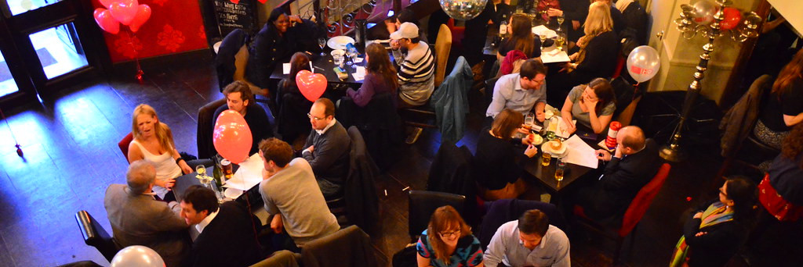

Trivia Questions and Answers
Posted on October 14, 2026 • 15-minute read

Contents
Animals
In 2020, a zoo in Japan requested people video call these marine animals to ensure they remained used to seeing humans during COVID lockdowns so that scientists could continue studying them without the animals hiding.
Eels
McCurry, Justin. "Japanese aquarium urges public to video-chat eels who are forgetting humans exist." The Guardian. 2020 May 1, https://www.theguardian.com/world/2020/may/01/japanese-aquarium-urges-public-to-video-chat-eels-who-are-forgetting-humans-exist.
It has been widely speculated that a song of the Eurasian blackbird is the inspiration behind this famous single by the Danish eurodance band, Aqua.
Barbie Girl
Green, Hank. "#stitch with @hessyd." TikTok. 2022 October 15, https://www.tiktok.com/@hankgreen1/video/7154556182064057605.
Japanese scientist Nobuo Suga built swings for these animals in 1990 to study Doppler shift compensation.
(Mustached) bats
Suga, Nobuo. "Biosonar and Neural Computation in Bats." Scientific American. June 1990, https://www.scientificamerican.com/article/biosonar-and-neural-computation-in/.
This special move of a character first introduced in the video game F-Zero may have been inspired by the hunting habits of the smallest order of birds of prey, who have unusually small but strong talons which they ball up into fists.
Falcon Punch
"F-Zero." Wikipedia: The Free Encyclopedia. Wikimedia Foundation, Inc, https://en.wikipedia.org/wiki/F-Zero.
According to a 2015 article in Current Biology, male howler monkeys with the loudest howls typically have the smallest of this pair of organs.
Testes
Dunn, Jacob C., Lauren B. Halenar, Thomas G. Davies, Jurgi Cristobal-Azkarate, David Reby, Dan Sykes, Sabine Dengg, W. Tecumseh Fitch, and Leslie A. Knapp. "Evolutionary Trade-Off between Vocal Tract and Testes Dimensions in Howler Monkeys." Current Biology. 2 November 2015. https://www.cell.com/current-biology/fulltext/S0960-9822(15)01109-4.
This type of animal uses its eyeballs to help swallow its prey, a process that is required because its saliva is a non-Newtonian fluid.
Frog
Noel, Alexis C., Hao-Yuan Guo, M. Mandica, and D. Hu. "Frogs use a viscoelastic tongue and non-Newtonian saliva to catch prey." Journal of the Royal Society Interface. February 2017. https://www.semanticscholar.org/paper/Frogs-use-a-viscoelastic-tongue-and-non-Newtonian-Noel-Guo/187b6db203a780194f22ea2af00c3fce3446d33a.
This animal, itself orca prey, has been observed protecting other species of orca prey, sometimes by hoisting them above water on their backs.
Humpback whale
Pitman, Robert, Volker Deecke, Chris Gabriele, Mridula Srinivasan, Nancy Black, Judith Denkinger, John Durban, Elizabeth Mathews, Dena Matkin, Janet Neilson, Alisa Schulman-Janiger, Debra Shearwater, Peggy Stap, and Richard Ternullo. "Humpback whales interfering when mammal-eating killer whales attack other species: Mobbing behavior and interspecific altruism?" Marine Mammal Science. July 2016. https://doi.org/10.1111/mms.12343.
The males of this family of animals make a noise and vibrate to inform other males attempting to mount them that they are also males.
Toads
Schmidt, R. S., C. P. Kemnitz, and W. R. Hudson. "Origin of anuran calling: description of toad releasing." Journal of Experimental Zoology. June 1990. https://doi.org/10.1002/jez.1402540314.
A 2023 study published in Nature Ecology & Evolution documented that male individuals of a species of this infraorder that were having more gay sex were also fathering more babies.
Monkeys, specifically rhesus macaques
Clive, Jackson, Ewan Flintham, and Vincent Savolainen. "Same-sex sociosexual behaviour is widespread and heritable in male rhesus macaques." Nature Ecology & Evolution. 2023. https://www.nature.com/articles/s41559-023-02111-y.
Cheetahs in zoos are often raised with this other animal to help them overcome anxiety.
Dogs
Schultz, Isaac. "An Emotional Support Dog Is the Only Thing That Chills Out a Cheetah." Atlas Obscura. 19 August 2019. https://www.atlasobscura.com/articles/cheetah-dog-furry-friendship.
Dubbed "Fin-cent Van Gogh," an animal of this species fitted with a GPS tracker swam a path in the Atlantic ocean resembling a self-portrait between 2020 and 2022.
Great white shark
Best, Shivali. "Fin-cent Van Gogh! Great white shark fitted with a GPS tracker 'draws' an incredible SELF-PORTRAIT while swimming the Atlantic Ocean." Daily Mail. 23 September 2022. https://www.dailymail.com/sciencetech/article-11243405/Great-white-shark-fitted-GPS-tracker-draws-incredible-SELF-PORTRAIT.html.
Many flowering plants use this type of physical field to communicate with passing bees whether or not they have been recently pollinated and have nectar.
Electrical
Clarke, Dominic, Heather Whitney, Gregory Sutton, and Daniel Robert. "Detection and Learning of Floral Electric Fields by Bumblebees." Science. 21 February 2013. https://www.science.org/doi/10.1126/science.1230883.
This pest acts as a disease vector for sleeping sickness in humans and livestock, a fact which prevented Islam from spreading in much of sub-Saharan Africa by preventing Arab traders from thriving there.
Tsetse fly
Athni, Tejas S, Marta S Shocket, Lisa I Couper, Nicole Nova, Iain R Caldwell, Jamie M Caldwell, Jasmine N Childress, Marissa L Childs, Giulio A De Leo, Devin G Kirk, Andrew J MacDonald, Kathryn Olivarius, David G Pickel, Steven O Roberts, Olivia C Winokur, Hillary S Young, Julian Cheng, Elizabeth A Grant, Patrick M Kurzner, Saw Kyaw, Bradford J Lin, Ricardo C López, Diba S Massihpour, Erica C Olsen, Maggie Roache, Angie Ruiz, Emily A Schultz, Muskan Shafat, Rebecca L Spencer, Nita Bharti, and Erin A Mordecai. "The influence of vector-borne disease on human history: socio-ecological mechanisms." Ecology Letters. January 2021. https://doi.org/10.1111/ele.13675.
Name one example animal from each class of the four times powered, winged flight independently evolved.
Insects (dragonfly); reptiles (pterodactyl); birds (sparrow); mammals (bat)
Khandelwal, Pranav C., Shane D. Ross, Haibo Dong, and John J. Socha. Convergent Evolution. Springer Nature, February 2023.
The Negro Matapacos, Spanish for “Black Cop Killer,” was this species of animal that rose to fame for its participation in the 2011–2013 Chilean student protests.
Dog
"Negro Matapacos." Wikipedia: The Free Encyclopedia. Wikimedia Foundation, Inc, https://en.wikipedia.org/wiki/Negro_Matapacos.
In the days following this 21st century major world event, researchers studying whale populations discovered a precipitous drop in whale stress hormones. It is hypothesized that the reason for the drop is the relative lack of noise from overseas traffic during the brief period after this event.
9/11
Rolland, Rosalind M., Susan E. Parks, Kathleen E. Hunt, Manuel Castellote, Peter J. Corkeron, Douglas P. Nowacek, Samuel K. Wasser, and Scott D. Kraus. "Evidence that ship noise increases stress in right whales." Proceedings of the Royal Society. February 2012. https://doi.org/10.1098/rspb.2011.2429
According to a 2015 paper by zoologist Dr. Angela Stöger, giraffes use this method to communicate audibly with other giraffes.
Humming
Baotic, Anton, Florian Sicks, and Angela S. Stoeger. "Nocturnal 'humming' vocalizations: adding a piece to the puzzle of giraffe vocal communication." BMC Research Notes. September 2015. https://link.springer.com/article/10.1186/s13104-015-1394-3
This animal shares its name with the beginning of the only continent on which it is not indigenous.
Ant
"Ant." Wikipedia: The Free Encyclopedia. Wikimedia Foundation, Inc, https://en.wikipedia.org/wiki/Ant.
History
After a Russian foreign minister claimed that the bombs being dropped by Russian warplanes on Finland during the 1939 Winter War were actually food aid, Finns gave this name to the improvised incendiary devices they threw at Russian tanks as a "drink" for the foreign minister to go with his "food."
Molotov cocktail
"Molotov cocktail." Wikipedia: The Free Encyclopedia. Wikimedia Foundation, Inc, https://en.wikipedia.org/wiki/Molotov_cocktail#Etymology.
After its adoption in 1987, every country in the world joined the Montreal Protocol, which effectively halted the production of man-made chemicals that deplete this atmospheric substance that is responsible for protecting the Earth from most of the sun's ultraviolet radiation.
Ozone
"Montreal Protocol." Wikipedia: The Free Encyclopedia. Wikimedia Foundation, Inc, https://en.wikipedia.org/wiki/Montreal_Protocol.
This popular board game was originally called "The Landlord's Game," designed to demonstrate that an economy rewarding all individuals is better than one where just a few hold all the wealth.
Monopoly
"Monopoly (game)." Wikipedia: The Free Encyclopedia. Wikimedia Foundation, Inc, https://en.wikipedia.org/wiki/Monopoly_(game).
The "red pill movement," which teaches the awakening of men to the supposed reality that men are the oppressed gender in a society dominated by feminism, borrows its name from this 1999 film directed by two trans women in which many of the characters reject their birth names in favor of gender-neutral ones and dress androgynously.
The Matrix
"Manosphere." Wikipedia: The Free Encyclopedia. Wikimedia Foundation, Inc, https://en.wikipedia.org/wiki/Manosphere#Jargon.
This famous statue depicts jugular venous distention (JVD), a visibly enlarged jugular vein, likely due to the fear the subject felt as he prepared for battle against a much larger opponent. JVD would not be discovered by Western medical scientists for over 100 years after the statue's creation.
Michelangelo's David
Gelfman, Daniel M. "The David Sign, Revisited." American Journal of Medicine Open, Oct. 2023, p. 100061, https://doi.org/10.1016/j.ajmo.2023.100061.
As of 2019, the Kenyan National Bureau of Statistics (KNBS) lists this many tribes, not including other nationalities or subtribes.
45, or 41 if you exclude Kenyan Asians, Arabs, Americans, and Europeans
"2019 Kenya Population and Housing Census, Volume IV: Distribution of Population by Socio-Economic Characteristics." Kenya National Bureau of Statistics. December 2019. https://www.knbs.or.ke/wp-content/uploads/2023/09/2019-Kenya-population-and-Housing-Census-Volume-4-Distribution-of-Population-by-Socio-Economic-Characteristics.pdf.
German soldiers in World War II gave this two-word nickname to the Soviet's 588th Bomber Regiment—an all-female fighting unit who would purposefully stall the engines of their wooden planes and glide over Nazi positions to drop bombs on sleeping troops—because the German soldiers thought they sounded like broomsticks in the sky as they approached, always after dusk.
Night Witches
"The Night Witches of World War Two." The Documentary Podcast. BBC, https://www.stage.bbc.co.uk/programmes/p0dzxcf6.
These three foreign organizations allegedly worked with the government of Peru to forcibly sterilize approximately 300,000 indigenous women between 1980 and 2000.
The United States Agency for International Development (USAID), the United Nations Population Fund (UNFPA), and the Nippon Foundation
"Forced sterilization in Peru." Wikipedia: The Free Encyclopedia. Wikimedia Foundation, Inc, https://en.wikipedia.org/wiki/Forced_sterilization_in_Peru#Foreign_involvement.
Upon achieving independence from the French, the new Haitian government granted citizenship and the moniker of "Black" to citizens of primarily these two European countries who fought with the Haitian slaves against the French colonial government.
Poland and Germany
"1804 Haitian massacre." Wikipedia: The Free Encyclopedia. Wikimedia Foundation, Inc, https://en.wikipedia.org/wiki/1804_Haitian_massacre.
Armed groups used to break up strikes and protests in 19th-century England and American slave patrols make up the direct, institutional precursor to this modern governmental body.
Police
Williams, Kristian. Our Enemies in Blue: Police and Power in America. AK Press, 2015.
O'Brien, Martin and Majid Yar. Criminology: The Key Concepts. Routledge, 2008.
In a speech in March 2019, Israeli Prime Minister Benjamin Netanyahu argued in favor of sending funds to this organization in an attempt to thwart the creation of a Palestinian state.
Hamas
Harkov, Lahav. "Netanyahu: Money to Hamas part of strategy to keep Palestinians divided." The Jerusalem Post. 2019 March 12, https://www.jpost.com/arab-israeli-conflict/netanyahu-money-to-hamas-part-of-strategy-to-keep-palestinians-divided-583082.
In March 2007, a 170-man Swiss infantry unit got lost along the northeast border during a training exercise and inadvertently crossed 1.5 km into this country. When informed of the invasion by Swiss authorities, a ministry spokesperson for this country responded, "No problem, these things happen."
Liechtenstein
"Liechtenstein." Wikipedia: The Free Encyclopedia. Wikimedia Foundation, Inc, https://en.wikipedia.org/wiki/Liechtenstein#Security_and_defence.
In the 1950s, this country's secular government nationalized its oil reserves, after which the US and British governments orchestrated a coup and installed a dictator for whom they later facilitated escape after a religious revolution.
Iran
Macket, Robert. "Secrets of History: The C.I.A. in Iran." The New York Times. 2007 March 8, https://archive.nytimes.com/thelede.blogs.nytimes.com/2007/03/08/secrets-of-history-the-cia-in-iran/.
An eventual subsidiary of this British multinational consumer packaged goods company, owner of brands such as Horlick's and Dove lotion, once sold all of the land in present-day Nigeria to the British government.
Unilever
Faloyin, Dipo. Africa Is Not a Country. W. W. Norton & Company, 2022.
What is US President Harry S Truman's middle name?
S
"Harry S. Truman." Wikipedia: The Free Encyclopedia. Wikimedia Foundation, Inc, https://en.wikipedia.org/wiki/Harry_S._Truman#Early_life,_family,_and_education.
Germany committed genocide against this group of people in 1904, incarcerating them in concentration camps, performing medical experiments on them, and forcing them into slave labor.
The Herero and Nama people of Namibia
"Herero and Nama genocide." Wikipedia: The Free Encyclopedia. Wikimedia Foundation, Inc, https://en.wikipedia.org/wiki/Herero_and_Nama_genocide.
This prominent anti-abortion advocate raised tens of millions of dollars to establish hospitals that operated without doctors or pain medication, maintained close ties to Haitian dictator François Duvalier, and said, “There is something beautiful about seeing the poor accept their lot.” She won the Nobel Peace Prize in 1979.
Mother Teresa
Sebba, Anne. Mother Teresa: Beyond the Image. Doubleday, 1997.
In January 2012, the International Criminal Court abandoned the prosecution of this future head of state after he was charged with crimes against humanity, including murder and persecution.
William Ruto
"Situation in the Republic of Kenya. The Prosecutor v. William Samoei Ruto, Henry Kiprono Kosgey and Joshua Arap Sang. Case n° ICC-01/09-01/11." International Criminal Court Case Information Sheet. 2011. https://www.icc-cpi.int/sites/default/files/iccdocs/PIDS/cis/RutoKosgeySangEng.pdf.
"Nam Lolwe" is the precolonial name given by the Luo people of Kenya to this body of water.
Lake Victoria
Wangechi, Muriuki Sharon. Renaming Nam Lolwe and Re(naming) Lake Victoria: An Analysis of Kenya's Colonial Historiography and Postcolonial Social-Politics. Master's Thesis. Linnaeus University, 2024, https://www.diva-portal.org/smash/get/diva2:1873141/FULLTEXT02.pdf.
Math
This four-digit number, dubbed "Kaprekar's constant," can be made by starting with any four-digit base-10 whole number in which at least one digit is different than the others, sorting the digits into descending and ascending order, calculating the difference between the two new numbers, and repeating the process with the resulting difference until convergence.
6174
"Kaprekar's routine." Wikipedia: The Free Encyclopedia. Wikimedia Foundation, Inc, https://en.wikipedia.org/wiki/Kaprekar's_routine.
This Tamil mathematician independently compiled nearly 3,900 mathematical results before his death at age 32 in 1920, including solutions to mathematical problems then considered unsolvable, many of which he labeled "simple properties" in his private notebooks.
Ramanujan
"Srinivasa Ramanujan." Wikipedia: The Free Encyclopedia. Wikimedia Foundation, Inc, https://en.wikipedia.org/wiki/Srinivasa_Ramanujan.
A digon, which cannot be drawn on a flat surface without degenerating, has this quantity of sides and vertices.
2
"Digon." Wikipedia: The Free Encyclopedia. Wikimedia Foundation, Inc, https://en.wikipedia.org/wiki/Digon.
In addition to its applications in cartography, Gauss' "Remarkable Theorem" teaches us that folding this famous Neapolitan food before eating it helps avoid spilling its ingredients.
Pizza
"Stopping for Directions: How Karl Friedrich Gauss and Pizza Help Get Us Where We Need to Go." Harvard University Press, 7 November 2024. https://www.hup.harvard.edu/features/stopping-for-directions-how-karl-friedrich-gauss-and-pizza-help-get-us-where-we-need-to-go.
This famous mathematical constant is coincidentally approximately equal to the number of kilometers in one mile, a fact that enables people to use the Fibonacci sequence as a way to approximate the conversion between miles and kilometers when describing distances.
The golden ratio
"Golden ratio." Wikipedia: The Free Encyclopedia. Wikimedia Foundation, Inc, https://en.wikipedia.org/wiki/Golden_ratio.
Ancient Egyptians used this popular theorem, later claimed by a Greek mathematician upon returning from his studies in Egypt, to reconstruct demarcations around plots of land with triangles following seasonal flooding of the Nile.
The Pythagorean Theorem, a²+b²=c²
Pierce, Emily. "What's a Rope-Stretcher?" The American Surveyor. 15 August 2021. https://amerisurv.com/2021/08/15/whats-a-rope-stretcher/.
Italian mathematician Girolamo Cardano was the first person to write about this concept in mathematics, today represented with the letter "i," referring to it as "mental tortures."
Imaginary numbers
Cardano, Girolamo. Ars Magna (or The Rules of Algebra, Translated and Edited by T. Richard Witmer). Dover Publications, 1993.
What is the only prime number followed immediately by a cube?
7
pgadey, Is $7$ the only prime followed by a cube?, URL (version: 2014-02-12): https://math.stackexchange.com/q/671086.
Christianity
In the book of Genesis in the Bible, how many gendered instructions does God give to Adam and Eve prior to their consumption of the fruit of the Tree of Knowledge, The Fall?
Zero
Genesis
Junia, greeted by Paul in his Epistle to the Romans, is considered the first woman to bear this title in the Christian church.
Apostle
"Junia (New Testament person)." Wikipedia: The Free Encyclopedia. Wikimedia Foundation, Inc, https://en.wikipedia.org/wiki/Junia_(New_Testament_person).
Parts of Psalm 29 and Isaiah 27 were likely originally written to exalt Ba'al Zvuv (Lord Baal), a local storm deity worshipped by the Philistines during the emergence of early Judaism. Later, Hebrew writers gave him this nickname, meaning "Lord of the Flies," effectively calling him poop and his followers flies.
Beelzebub
"Beelzebub." Wikipedia: The Free Encyclopedia. Wikimedia Foundation, Inc, https://en.wikipedia.org/wiki/Beelzebub.
This book tells a story in which the god of Israel promises a coalition of his followers victory over the armies of Moab, a kingdom that had previously been a vassal state of Israel. The king of Moab sacrifices his son to the patron deity of Moab, who unleashes divine fury upon the Israelite army, defeating them despite their god's prophesy.
2 Kings, the Bible
2 Kings, Chapter 3.
The fifteenth chapter of the book of Deuteronomy in the Bible commands that all of these be cancelled every seven years.
Debts
Deuteronomy 15:1
The "H" in "Jesus H. Christ" is the erroneous transliteration of this Greek letter.
Eta
"Christogram." Wikipedia: The Free Encyclopedia. Wikimedia Foundation, Inc, https://en.wikipedia.org/wiki/Christogram.
Cardinal Robert Bellarmine first proposed biblical inerrancy, the theory that everything written in the Bible is literally true, in which century?
16th
Baden, Joel, Hindy Najman, and Eibert JC Tigchelaar, eds. Sibyls, Scriptures, and Scrolls: John Collins at Seventy. Brill, 2016.
A sex worker in Ezekiel 23:20 likens these to those of a donkey.
Her lover's genitals
Ezekiel 23:20
According to Judges 4:21, what happened to Sisera after Jael hammered a tent peg through his head?
He died
Judges 4:21
Biblical scholars use this one-letter name, an abbreviation of the German word for "source," to reference the parts of the Gospels of Matthew and Luke that were likely written prior to the rest of any of the canonical Gospels.
Q
"Q source." Wikipedia: The Free Encyclopedia. Wikimedia Foundation, Inc, https://en.wikipedia.org/wiki/Q_source.
This name for God is actually the product of a misunderstanding of how the tetragrammaton YHWH could be vocalized.
Jehovah
"Jehovah." Wikipedia: The Free Encyclopedia. Wikimedia Foundation, Inc, https://en.wikipedia.org/wiki/Jehovah.
Quotes
To whom is each quote, below, attributable?
"We dared to hope we had invented something that would bring lasting peace to the earth. But we were wrong." — O.W., circa 1939-1947
Orville Wright
"Orville Wright." Wikiquote. Wikimedia Foundation, Inc, https://en.wikiquote.org/wiki/Orville_Wright.
"Those who make peaceful revolution impossible will make violent revolution inevitable." — J.F.K., 1961
John F. Kennedy
"The President and the Press: Address before the American Newspaper Publishers Association, April 27, 1961." John F. Kennedy Presidential Library and Museum. https://www.jfklibrary.org/archives/other-resources/john-f-kennedy-speeches/american-newspaper-publishers-association-19610427.
"Every gun that is made, every warship launched, every rocket signifies, in the final sense, a theft from those who hunger and are not fed, those who are cold and are not clothed. This world in arms is not spending money alone." — D.D.E., 1961
Dwight D. Eisenhower
Eisenhower, Susan. "50 years later, we're still ignoring Ike's warning." The Washington Post. 16 January 2011. https://www.washingtonpost.com/wp-dyn/content/article/2011/01/14/AR2011011404915.html.
"Nobody in the world, nobody in history, has ever gotten their freedom by appealing to the moral sense of the people who were oppressing them." — A.S., 1988
Assata Shakur
Shakur, Assata. Assata: An Autobiography. Lawrence Hill Books, 1988.
"[Landlords] are the only one of the three orders whose revenue costs them neither labour nor care, but comes to them, as it were, of its own accord, and independent of any plan or project of their own. That indolence, which is the natural effect of the ease and security of their situation, renders them too often, not only ignorant, but incapable of that application of mind." — A.S., 1776
Adam Smith
Smith, Adam. The Wealth of Nations. W. Strahan and T. Cadell, London, 1776.
"A profound judgment of today's riots was expressed by Victor Hugo a century ago. He said, 'If a soul is left in the darkness, sins will be committed. The guilty one is not he who commits the sin, but he who causes the darkness.'" — M.L.K., 1967
Martin Luther King, Jr.
King Jr., Martin Luther. "The Role of the Behavioral Scientist in the Civil Rights Movement." APA Annual Convention, September 1967, Washington, D.C. https://www.apa.org/topics/equity-diversity-inclusion/martin-luther-king-jr-challenge.
"Philosophers have hitherto only interpreted the world in various ways; the point is to change it." — K.M., 1845
Karl Marx
Marx, Karl. Theses on Feuerbach. 1888.
Complete the following quotes by filling in the blank.
"There is nothing in the middle of the road but yellow lines and dead ." — Stuart Stevens, Mitt Romney's old campaign manager, quoting a book by Jim Hightower with the same title
armadillos
Stevens, Stuart. X.com.
"The nuclear arms race is like two sworn enemies standing waist deep in , one with three matches, the other with five." — Carl Sagan
gasoline
Sulleyman, Aatif. "20 Inspiring Carl Sagan Quotes 25 Years After the Astronomer's Death." Newsweek. 21 December 2021. https://www.newsweek.com/carl-sagan-quotes-death-pale-blue-dot-astronomer-25-years-1661545.
"Prayer and comfortable living are ." — Teresa of Ávila, The Way of Perfection
incompatible
"Quote by Teresa of Ávila." Goodreads. https://www.goodreads.com/quotes/808092-prayer-and-comfortable-living-are-incompatible.
"Don't accept the analysis of from people who don't have the same goals as you." — Nathan Bernhardt
"counterproductive"
Bernhardt, Nathan. X.com. https://x.com/jonbernhardt/status/1444821925470015489.
"Eat the leaves of … This is a lesson in scarcity, abundance, and reclaiming relational nourishment from what civilization calls trash." — Erica Violet Lee
strawberries
Lee, Erica Violet. X.com. https://x.com/ericavioletlee/status/1406701612471513091.
"The best material model of a cat is another, or preferably the same, ." — Norbert Wiener
cat
"Quote by Norbert Wiener." Goodreads. https://www.goodreads.com/quotes/8157292-the-best-material-model-of-a-cat-is-another-or.
" doesn't imply causation, but it does waggle its eyebrows suggestively and gesture furtively while mouthing 'look over there'." — Randall Munroe
Correlation
Munroe, Randall. "Correlation." XKCD. https://xkcd.com/552/.
"And the rest is rust and ." — Vladimir Nabokov
stardust
"Quote by Vladimir Nabokov." Goodreads. https://www.goodreads.com/quotes/135242-and-the-rest-is-rust-and-stardust.
"Justice is rather the activity of , than a virtue in itself." — Horace Walpole
truth
"'Justice is rather the activity of truth,...' - Horace Walpole." BrainyQuote. https://www.brainyquote.com/quotes/horace_walpole_400240.
"Being right too soon is socially ." — Robert Heinlein
unacceptable
"Quote by Robert A. Heinlein." Goodreads. https://www.goodreads.com/quotes/76603-being-right-too-soon-is-socially-unacceptable.
Psychology
This theory proposes that people are disabled by systemic barriers, negative attitudes, and social exclusion, rather than by their own physical or mental differences.
The social model of disability
"Social model of disability." Wikipedia: The Free Encyclopedia. Wikimedia Foundation, Inc, https://en.wikipedia.org/wiki/Social_model_of_disability.
Ole Ivar Lovaas is best known for his foundational contributions to two fields of psychotherapy aimed at changing the identity of individuals deemed abnormal: Applied Behavioral Analysis (ABA) therapy for autistic children and this.
Gay conversion therapy
Gibson, M. and P. Douglas. "Disturbing Behaviours: Ole Ivar Lovaas and the Queer History of Autism Science." Catalyst Feminism Theory Technoscience. 16 October 2018. https://api.semanticscholar.org/CorpusID:149599653
Simone Biles, Lil Kesh, and Trevor Noah all have this neurodevelopmental disorder.
ADHD
Biles, Simone. X.com. 13 September 2016. https://x.com/Simone_Biles/status/775783400808583169.
"Lil Kesh Opens Up About Battling Anxiety, Suspected ADHD Since Childhood." Sundiata Post. 5 May 2025. https://sundiatapost.com/lil-kesh-opens-up-about-battling-anxiety-suspected-adhd-since-childhood/.
"Trevor Noah: The 60 Minutes Interview." YouTube. 20 June 2022. https://www.youtube.com/watch?v=8_gyL3o6dIs.
The term "neurodivergent homophily" describes this documented social phenomenon among autistic people and people with ADHD.
The tendency for neurodivergent people to preferentially form friendships with others who are also neurodivergent
McKee, Tara E. "Peer Relationships in Undergraduates With ADHD Symptomatology: Selection and Quality of Friendships." Journal of Attention Disorders, 21(12), 1020-1029. 30 October 2014. https://doi.org/10.1177/1087054714554934.
Wolford GW, G Varela, RE Freeland, and ML Bellon-Harn. "Social Isolation or Autistic Homophily: An Exploration of the Social Networks of Autistic College Students." Autism: the International Journal of Research and Practice. 2026 April 29. https://doi.org/10.1177/13623613261435994.
This disputed disorder was coined by Swedish psychiatrist Nils Bejerot after he heard about hostages of a bank robbery who refused to testify against their hostage taker. The hostages claimed that the problem was the police, who had sent an unrelated 16-year-old boy into the bank during the crisis and behaved such that the hostages had been more scared of getting shot by the police than their hostage taker.
Stockholm syndrome
"Stockholm syndrome." Wikipedia: The Free Encyclopedia. Wikimedia Foundation, Inc, https://en.wikipedia.org/wiki/Stockholm_syndrome.
Proposed in 1851 by American physician Samuel A. Cartwright, Drapetomania was a hypothesized mental disorder causing this behavior.
Enslaved Africans fleeing captivity
"Drapetomania." Wikipedia: The Free Encyclopedia. Wikimedia Foundation, Inc, https://en.wikipedia.org/wiki/Drapetomania.
According to a 2019 article published in Nature Human Behavior, adults who played a lot of Pokémon as children have this long-term physiological effect.
Distinct distributed cortical responses to Pokémon in predictable places in the brain
Gomez, Jesse, Michael Barnett, and Kalanit Grill-Spector. "Extensive childhood experience with Pokémon suggests eccentricity drives organization of visual cortex." Nature Human Behavior. 2019. https://www.nature.com/articles/s41562-019-0592-8.
Space
The popular Sesame Street character Big Bird was originally scheduled to join the crew of this space shuttle.
Challenger
Boyle, Alan. "NASA Confirms Talks to Fly Big Bird on Doomed Shuttle Challenger." NBC News. https://www.nbcnews.com/science/weird-science/nasa-confirms-talks-fly-big-bird-doomed-shuttle-challenger-n353521.
The original mechanism spacecraft used to dock into each other while in orbit involved inserting the nosecone of one craft into the transfer bay of the other, frequently discussed by engineers as "the classic conception of the male and female part." However, when the space agencies of the USA and USSR planned a mission to dock two of their spacecraft together, neither country was willing to have their spacecraft play the "female" role. This motivated the design of a new, more symmetrical docking system, the APAS. The final three letters of that initialism stand for "Peripheral Attach System." What does the first "A" stand for?
Androgynous
Jenks, Andrew (2021-11-04). "Androgynous Coupling and the Engineering of Peace: A Cold-War Romance in Space." Journal of Russian American Studies. 5 (2). https://doi.org/10.17161%2Fjras.v5i2.16029.
Where would you need to go on Earth to be able to stand for the longest consecutive period of time without losing sight of the moon?
South Pole
PM 2Ring, What is the longest time the Moon can stay in the sky?, URL: https://astronomy.stackexchange.com/questions/57586/what-is-the-longest-time-the-moon-can-stay-in-the-sky.
Contrary to popular belief, the US became the first country to launch a manmade object into space when Operation Plumbbob used a nuclear explosion to propel this metal object beyond Earth's orbit.
Manhole cover
"Operation Plumbbob." Wikipedia: The Free Encyclopedia. Wikimedia Foundation, Inc, https://en.wikipedia.org/wiki/Operation_Plumbbob.
This country sent the first human-made object to make contact with the Moon. When the object landed on the Moon, it exploded into dozens of this country's flags, scattering them across the lunar surface.
USSR
"Luna 2." Wikipedia: The Free Encyclopedia. Wikimedia Foundation, Inc, https://en.wikipedia.org/wiki/Luna_2.
At at least 100,000 years old, the oldest story in the world still around today is hypothesized to be inspired by this constellation.
The Pleiades, or the seven sisters
"The Pleiades: Humanity's Oldest Story?" Museum of Science, Boston. 5 December 2024. https://www.mos.org/article/pleiades-humanitys-oldest-story.
There has been at least one human in space, continuously, since which year?
2000
Grimm, Linda E. and Sumer Loggins. "The International Space Station Marks 25 Years of Continuous Human Presence." National Aeronautics and Space Administration. 2 December 2025. https://www.nasa.gov/missions/station/the-international-space-station-marks-25-years-of-continuous-human-presence/
Approximately 4.5 billion years ago, the planet Theia crashed into the planet that is now Earth, jettisoning massive amounts of debris into orbit around Earth. These debris would later come to be known as this.
The Moon
"Theia (hypothetical planet)." Wikipedia: The Free Encyclopedia. Wikimedia Foundation, Inc, https://en.wikipedia.org/wiki/Theia_(hypothetical_planet).
Linguistics
As proven by Janice Jackson's 1998 dissertation at UMass Amherst involving cookie monster, African American Vernacular English shares this verb tense with Swahili notably absent in most dialects of English.
The habitual/occasional tense, the "habitual be," or the hu- tense
Jackson, Janice Eurana. Linguistic Aspect in African-American English Speaking Children: An Investigation of Apsectual "Be." Dissertation. UMass Amherst. 1998.
This is the Nahuatl-derived English translation of the name of the fruit called "parachichi" in Swahili.
Avocado
"Avocado." Wikipedia: The Free Encyclopedia. Wikimedia Foundation, Inc, https://en.wikipedia.org/wiki/Avocado.
"Chai tea," "naan bread", "ramen noodles," "shiitake mushrooms," "mole sauce", "The Los Angeles Angels," and "Lake Michigan" all have this in common.
They are all bilingual tautologies
"Pleonasm." Wikipedia: The Free Encyclopedia. Wikimedia Foundation, Inc, https://en.wikipedia.org/wiki/Pleonasm#Bilingual_tautological_expressions.
The English alphabet once but no longer includes this logogram as a letter, made by joining the letters "E" and "t".
Ampersand
"Ampersand." Wikipedia: The Free Encyclopedia. Wikimedia Foundation, Inc, https://en.wikipedia.org/wiki/Ampersand.
"Pole pole," "kidogo-dogo," "delulu," and "easy peasy" are examples of this one-word linguistic morphological process.
Reduplication
"Reduplication." Wikipedia: The Free Encyclopedia. Wikimedia Foundation, Inc, https://en.wikipedia.org/wiki/Reduplication.
Modern linguists do not know the Proto-Indo-European word for this animal, whose English name today comes from the words for "brown animal," because ancient Europeans were afraid to speak its name for fear of summoning it. We do, however, know its Ancient Greek name, which is contained in the name of a stellar constellation and a continent.
Bear
"Bear." Wikipedia: The Free Encyclopedia. Wikimedia Foundation, Inc, https://en.wikipedia.org/wiki/Bear.
In 1899, Howard and Emerson wrote a song making fun of this new greeting, which Thomas Edison was trying to popularize at the time. The song was later sung by a frog in a Warner Bros. cartoon.
Hello
"Hello! Ma Baby." Wikipedia: The Free Encyclopedia. Wikimedia Foundation, Inc, https://en.wikipedia.org/wiki/Hello!_Ma_Baby.
This language, developed by schools of deaf children shortly after the Sandinista Revolution, is the only spontaneously developed language linguists have been able to observe form in real time, and, arguably, the newest language in the world.
Nicaraguan Sign Language
"Nicaraguan Sign Language." Wikipedia: The Free Encyclopedia. Wikimedia Foundation, Inc, https://en.wikipedia.org/wiki/Nicaraguan_Sign_Language.
This is the most universal syllable, pronounceable in almost all known spoken languages, almost always as an indication of confusion.
Huh?
Dingemanse, Mark, Francisco Torreira, and N. J. Enfield. "Is 'Huh?' a Universal Word? Conversational Infrastructure and the Convergent Evolution of Linguistic Items." PLOS One. November 2013. https://doi.org/10.1371/journal.pone.0078273.
"Calque," itself a loanword, and "loanword," itself a calque, are both terms that describe this linguistic process.
Words coming into English from other languages
"Calque." Wikipedia: The Free Encyclopedia. Wikimedia Foundation, Inc, https://en.wikipedia.org/wiki/Calque.
According to a 2017 article published in Frontiers of Psychology, languages that developed in tropical areas tend to have more of these than languages that developed in cooler, drier areas because higher air temperature and more rain distort consonants more.
Vowels
Everett, Caleb. "Languages in Drier Climates Use Fewer Vowels." Frontiers of Psychology. 27 July 2017. https://doi.org/10.3389/fpsyg.2017.01285.
The etymology of the word "blog" comes from the sailing practice of tying evenly spaced knots along a rope, tying it to this object, throwing this object overboard, counting how many of the knots were dragged overboard over a set duration, and recording that number in a book.
Log
"Blog." Etymonline. https://www.etymonline.com/word/blog.
This two-word name for a major body of water has three Cs, each of which is pronounced differently.
Pacific Ocean
"Pacific Ocean." Dictionary.com. https://www.dictionary.com/browse/pacific-ocean.
This is the English translation of the Arabic name "Abdul."
Servant of the
"Abdul." Wikipedia: The Free Encyclopedia. Wikimedia Foundation, Inc, https://en.wikipedia.org/wiki/Abdul.
Drugs
According to a 2020 article published in the journal Tel Aviv, this now-illegal substance was used as incense in ritual practices in the Jerusalem Temple in the 8th century BCE.
Cannabis
Arie, Eran, Baruch Rosen, and Dvory Namdar. "Cannabis and frankincense at the Judahite shrine of Arad." Tel Aviv 47.1 (2020): 5-28.
The root and bark of this tree are ingested by the Bwiti people of West-Central Africa to bring about a spiritual near-death experience. Questionably legal medical clinics around the world also use it to treat addiction, often successfully.
Iboga
"Tabernanthe iboga." Wikipedia: The Free Encyclopedia. Wikimedia Foundation, Inc, https://en.wikipedia.org/wiki/Tabernanthe_iboga#Traditional_use.
First synthesized by American chemist Alexander Shulgin in 1974, this artificial substance is used as a spiritual psychedelic by the Sangoma, Nyanga, and Xhosa people of Southern Africa, who call it the "Medicine of the Singing Ancestors."
2C-B
"2C-B." Wikipedia: The Free Encyclopedia. Wikimedia Foundation, Inc, https://en.wikipedia.org/wiki/2C-B#History.
Traditional Basotho healers of Lesotho are the earliest recorded group to use this psychedelic substance in sub-Saharan Africa, and a new species of the source of this substance was discovered in Lesotho as recently as 2024.
Psilocybin (mushroom)
"Psilocybin mushroom." Wikipedia: The Free Encyclopedia. Wikimedia Foundation, Inc, https://en.wikipedia.org/wiki/Psilocybin_mushroom#Early.
The Muslim Sufis of the Horn of Africa used this indigenous substance to intensify their mystical experience and to facilitate a sense of union with God at least as early as the 14th century.
Khat, AKA Jaba or Miraa
"Khat." Wikipedia: The Free Encyclopedia. Wikimedia Foundation, Inc, https://en.wikipedia.org/wiki/Khat#History.
Assorted
Sodium citrate, the ingredient added to a certain type of cheese to lower its acidity and achieve a more melted consistency, contains these four elements of the periodic table, whose atomic symbols spell out the name of the cheese in which it is used.
Sodium, Carbon, Hydrogen, and Oxygen
Milligan, Ceara. "You've Probably Never Noticed This Quirky Fact About Sodium Citrate." Mashed. 16 February 2022. https://www.mashed.com/770182/youve-probably-never-noticed-this-quirky-fact-about-sodium-citrate/.
If you, while standing next to a scale on which rests a bucket of water, dip your hand into the bucket without touching the bottom of the bucket, will the weight shown by the scale increase, decrease, or stay the same?
Increase
"2B40.15 - Buoyancy - Finger, Water, and Scale." Instructional Resources and Lecture Demonstrations. University of Iowa. https://instructional-resources.physics.uiowa.edu/2b4015-buoyancy-finger-water-and-scale.
In 1905, Austrian botanist Gottlieb Haberlandt proposed that some plants had this sense after observing a parasitic plant called Boquila using leaf mimicry to form leaves similar not only to living host plants, but plastic houseplants as well.
Vision
Clements, Frederic E. (1905). "Die Lichtsinnesorgane der Laubblätter. By G. Haberlandt. Leipzig, Wilhelm Engelmann. 1905. Pp. 142, pl. 4." Science. 22 (559): 336–337. https://doi.org/10.1126%2Fscience.22.559.336.
Anthropologist James C. Scott coined this two-word phrase referring to the practice of doing small, everyday rule-breaking to build up resilience and readiness for bigger acts of resistance, breaking trivial laws (like jaywalking) often enough to "stay in shape" so you can judge whether a rule is just or reasonable and be ready to break a "big law" when needed.
Anarchist calisthenics
Scott, James C. Two Cheers for Anarchism: Six Easy Pieces on Autonomy, Dignity, and Meaningful Work and Play. Princeton University Press, 2012.
American surgeon William Halsted invented this to protect the hands of his wife, a nurse, from getting chapped and stained red during surgeries.
Rubber gloves
"William Stewart Halsted." Wikipedia: The Free Encyclopedia. Wikimedia Foundation, Inc, https://en.wikipedia.org/wiki/William_Stewart_Halsted.
The flag of this country contains the flags of Indonesia, Poland, Finland, the Netherlands, Thailand, and France.
Norway
Crouch, Alex. "Flag of Norway: the mother of all flags." Flag Institute. 2015. https://www.flaginstitute.org/wp/flag-facts/flag-of-norway-the-mother-of-all-flags/.
From 1977–1996, and again from 1997–2011, this country's flag was the only national flag in the world with only one color: green.
Libya
"Flag of Libya." Wikipedia: The Free Encyclopedia. Wikimedia Foundation, Inc, https://en.wikipedia.org/wiki/Flag_of_Libya#Historical_flags.
Research has shown that speed bumps tend to encourage drivers to speed up after driving over them to make up for lost time, negating their safety benefits. Many governments have begun implementing chicanes to encourage drivers to slow down instead. What is a chicane?
A serpentine curve in a road added by design
Pau, Massimiliano. "Speed Bumps May Induce Improper Drivers' Behavior: Case Study in Italy." Journal of Transportation Engineering. 15 August 2022. https://doi.org/10.1061/(ASCE)0733-947X(2002)128:5(472).
This 2001 children's film includes a character whose mother is captured, killed, and skinned by the movie’s main villain. It won Best Animated Feature at the 74th Academy Awards.
Shrek
Average Pepe Enjoyer. "Every time the three bears show up in Shrek (2001)." YouTube. https://www.youtube.com/watch?v=8jB_5GHcggQ.
This staple of both Italian and American cuisine is made by assembling the ingredients of a charcuterie board into a circle and baking them.
Pizza
"Pizza." Wikipedia: The Free Encyclopedia. Wikimedia Foundation, Inc, https://en.wikipedia.org/wiki/Pizza.